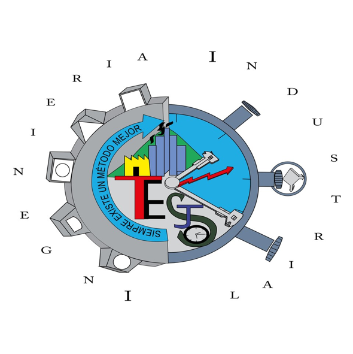

Carreras disponibles

Ingeniería Industrial
Optimiza procesos de producción y gestión en la industria para mejorar la eficiencia.
IngresaLicenciatura en Contador Público
Especialízate en la gestión financiera y contable de organizaciones y empresas.
IngresaLicenciatura en Turismo
Gestión de proyectos turísticos para el desarrollo económico y cultural de la región.
Ingresa